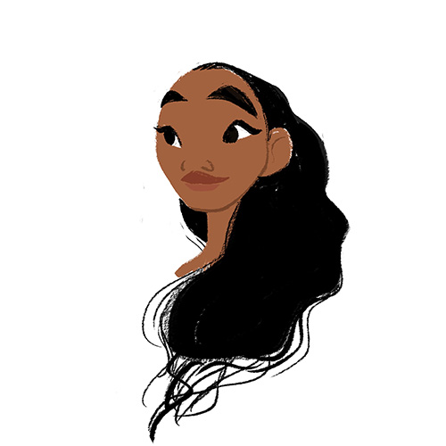
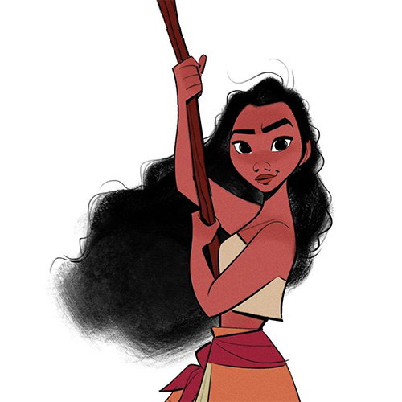
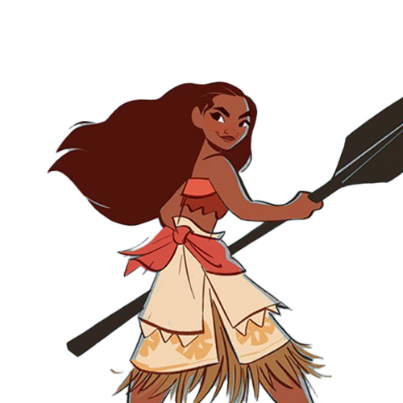
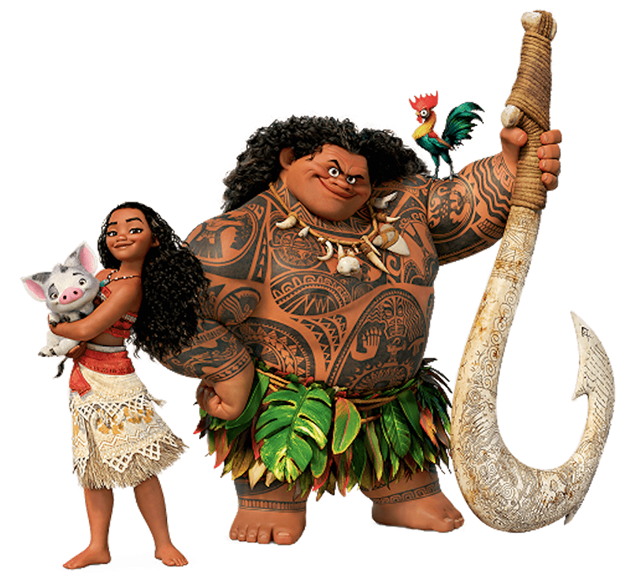

Character
Moana has long black hair, is of a more muscular build than most of Disney’s female characters, wears a variation of traditional Polynesian dress, and boasts a daring and strong-willed personality. Her name means “ocean” in Hawaiian and other Polynesian languages.
Character Design
Moana is Clements and Musker's first fully computer-animated film. One of the reasons for using computer animation was that the environment, including the ocean, benefited much more from the use of CGI as opposed to traditional animation. The filmmakers have also suggested that three-dimensional computer animation is well-suited to the "beautiful sculpturing" of the faces of the people of the South Pacific. Eric Goldberg worked on the hand-drawn animation used to depict Maui's sentient tattoos. During early development, the filmmakers considered the possibility of making the film with hand-drawn traditional animation, but only a few early animation tests were made in that style. In the final cut, only Maui's tattoos are hand-drawn.
-

Early design
The design crew drew on those experiences to create the world of the teenage Moana and the film that bears her name.
-

Development.1
The team did multiple designs of the characters from many points of view.“It’s really cool to see the different takes on the same character,”
-

Development.2
Directors Ron and Jon stressed how important it was for them to create a unique look for Moana – both the movie and the character.
Main Character
-
Moana
Moana is the 16-year-old daughter of a South Pacific chief. As the next chieftain of her village she is at odds with her responsibility to her people and her desire to explore the sea.
- 
-
Maui
Maui is the greatest shape-shifting demigod of the wind and sea and master of sailing in all of the Pacific. Maui steals the Te Fiti’s heart to give humanity the power of creation.